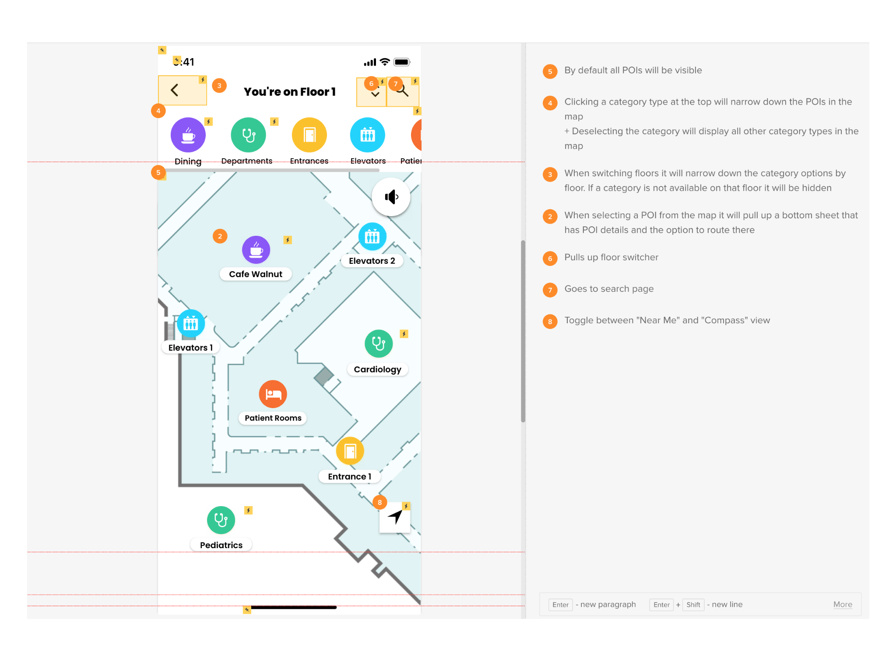

I was challenged with redesigning our company wayfinding solution. My goal was to create something that was simple, modern, and easy to navigate for users on the go.
My Role
Research
Analyze current product
Interactions
Identify interactions
Designs
High fidelity & Prototype
Challenge
The challenge was to create something that the developers could translate into a product. This meant that each aspect of the app has to be able to be configuratble and work for various clients. The fonts, colors, and images had to be flexible and work regardless of the branding. I included icons and illustrations for images in case the client doesn't have assets to provide. This allows for clients to select from illustration options and not feel the need to have images for everything.
Research
I researched our existing product to make sure I outlined all the features that needed to be accounted for. In addition, I outlined the current interactions to ensure that I created something that could easily transition for use. A sample of the existing design is available below.
Interactions
As I worked through the design, I began to document how the interactions would tie together. This was the beginning of the prototyping stage and would also be used for the developers to reference.

Design
Once the wireframes were finalized, I completed the high fidelity design and prototype. The overall design aligned with the core product goals while successfully updating the look and feel.